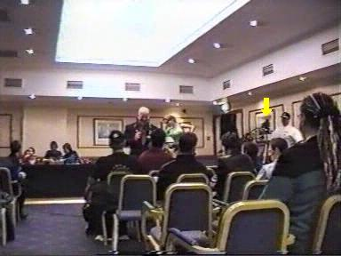

Most Wanted
Even though the camera tapes were carefully looked after at the time the relevent ArmadaCon was recorded. Some of the tapes have 'done a runner' during the years, stuffed into cupboards and forgotten.
The ArmadaCon Archive was only really formed a few years ago; so the slow process of cataloguing and transferring the 'rediscovered' tapes to disc has gradually revealed evidence of missing tapes.
These tapes may still exist; then again, they may be lost forever.
This page is dedicated to filling those gaps that time has created. If you can help........
ArmadaCon II
The second camera can just be seen in the background. It's believed that the missing tape also has the 'Who's Con is it Anyway' game on it. |
|
|
|
 |
ArmadaCon 2000
There, on the right, is a video camera complete with operator.
|
ArmadaCon 2001
Here can be seen, not one but two more cameras being used. The Archivist would be very interested in obtaining a copy of the footage from these cameras. |
|
ArmadaCon 2001
In the back, on the right, is a video camera complete with operator. |
|
 |
 |